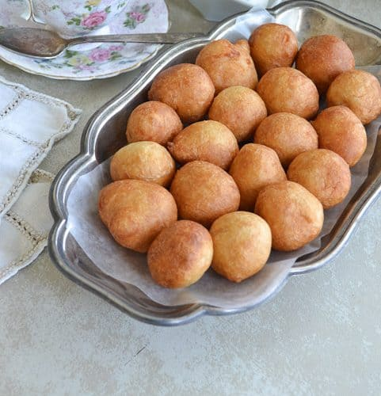

Sweet Puff Puff 🍩
Puff Puff is a traditional snack made of fried dough and eaten across Africa.
Especially in the west of the continent. The name "puff-puff" is from Nigeria, but many other names and varities of the pastry exist

Let's start cooking!🍴
Ingredient list
- 2 cups (250g) of Plain Flour
- 2 teaspoons of yeast
- ½ teaspoon ground nutmeg
- ½ cup granulated sugar
- 3 pinches of salt
- Lukewarm water
- Vegetable Oil
Instructions
- Put the flour in a bowl, add the ground nutmeg, powdered yeast, sugar and salt. Mix all these together.
- Add water in small quantities and mix everything by hand till you have a good blend of all the ingredients. Add the yeast you mixed with lukewarm water if applicable. Use warm water to mix the puff puff ingredients if you want it to rise faster.
- Keep mixing till the batter is smooth but not too watery to flow from a spoon. The mix should be much thicker than pancake batter.
- Cover the bowl with aluminum foil and make sure it is airtight by pressing the edges of the bowl.
- Leave to rise for about 45 minutes. When OK to fry, the Puff Puff batter should have risen in quantity and will have some air bubbles.
- Pour some oil in a deep pot and allow to heat up. It's not advisable to use a deep fryer for Puff Puff because of the netting but if you want to use it, set the temperature to 170°C.
- Test that the oil is hot enough by putting a drop of batter into the oil. If it sizzles and comes up to the surface of the oil, then the oil is hot enough. If the oil is not hot enough, the batter will go down to the bottom of the oil and stay there.
- When the oil is hot enough, scoop some batter into the oil with your hand by pressing the batter to come out from between your thumb and index finger. You should see the video for this technique as this is what will make your Puff Puff have a near-perfect spherical shape.
- Put in more scoops of the batter, as much as the space in the frying pot will allow without overcrowding.
- Once the underside of the puff puff has turned golden brown, flip the ball so that the topside will be fried as well.
- When both sides are golden brown, take out the puff puff balls and place in a sieve. If you want to reduce the oil on your Puff Puff as much as possible, then line your sieve with paper towels. The paper towels help soak away the excess oil on the puff puff.